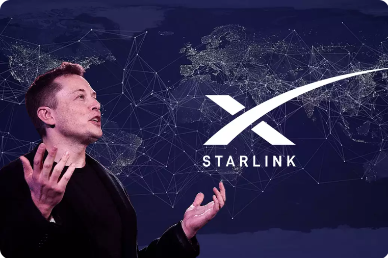

Biography
Elon Musk is a renowned entrepreneur, business magnate, and visionary known for his work in revolutionizing industries such as electric vehicles, space exploration, and renewable energy. He was born on June 28, 1971, in Pretoria, South Africa.
From an early age, Musk showed exceptional intelligence and curiosity. He developed a keen interest in computers and technology, teaching himself computer programming at a young age. After completing his studies at Pretoria Boys High School, he moved to Canada to attend Queen's University and later transferred to the University of Pennsylvania in the United States.
In 1995, Musk co-founded Zip2, a software company that aimed to assist newspapers in creating an online presence. The company experienced substantial success and was eventually acquired for $307 million. Musk used the proceeds from the sale to co-found X.com, an online payment company that would later become PayPal. PayPal revolutionized the online payment industry and was acquired by eBay in 2002 for $1.5 billion.
After the sale of PayPal, Musk set his sights on space exploration and founded SpaceX (Space Exploration Technologies Corp.) in 2002. His goal was to reduce the cost of space travel and make human colonization of Mars a reality. SpaceX achieved significant milestones, including becoming the first privately funded company to successfully launch and orbit a spacecraft (Dragon) and the first to send a spacecraft (Dragon) to the International Space Station (ISS).

In addition to SpaceX, Musk became involved in the automotive industry with the founding of Tesla Motors (now Tesla, Inc.) in 2003. Tesla has played a pivotal role in popularizing electric vehicles and pushing the boundaries of sustainable transportation. Musk has been instrumental in the development of groundbreaking electric car models, such as the Tesla Roadster, Model S, Model 3, Model X, and Model Y.
Beyond his ventures in space and electric vehicles, Musk has also made significant contributions to the field of renewable energy. He co-founded SolarCity (now part of Tesla) in 2006, a solar energy services company that focuses on providing sustainable solar power solutions.
Musk's bold and ambitious visions have often drawn both admiration and criticism. He has expressed his concerns about climate change and the need to transition to sustainable energy sources. In recent years, Musk has gained additional attention for his outspoken presence on social media platforms, where he frequently shares updates on his ventures, engages with his followers, and discusses various topics.
Elon Musk's relentless pursuit of innovation and his desire to push the boundaries of what is possible have solidified his position as one of the most influential figures in the business and technology sectors. His visionary ideas and determination to solve humanity's most pressing problems continue to inspire and shape industries around the world.